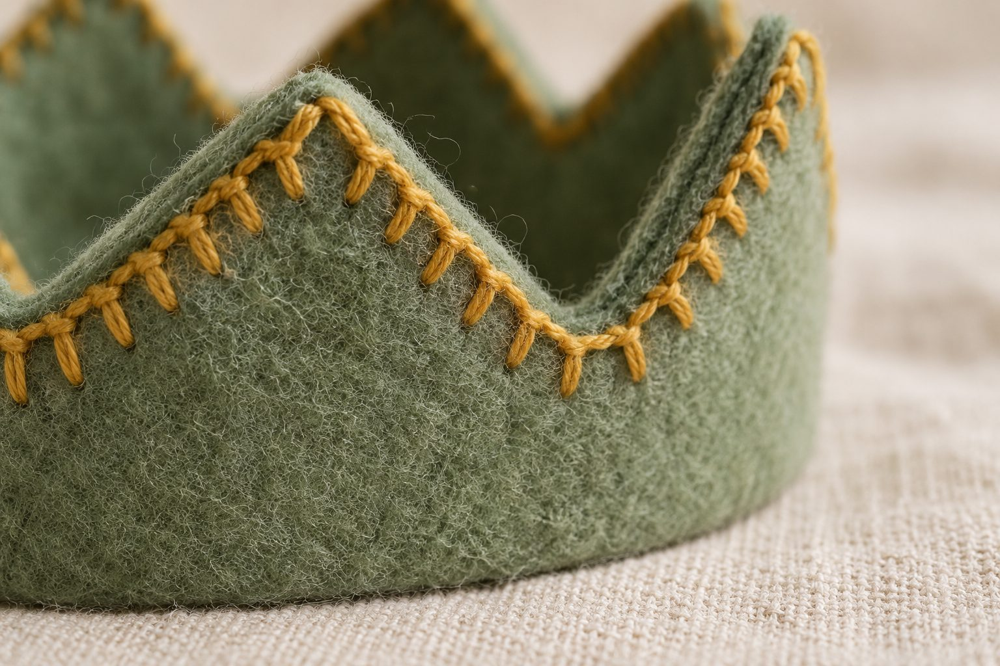
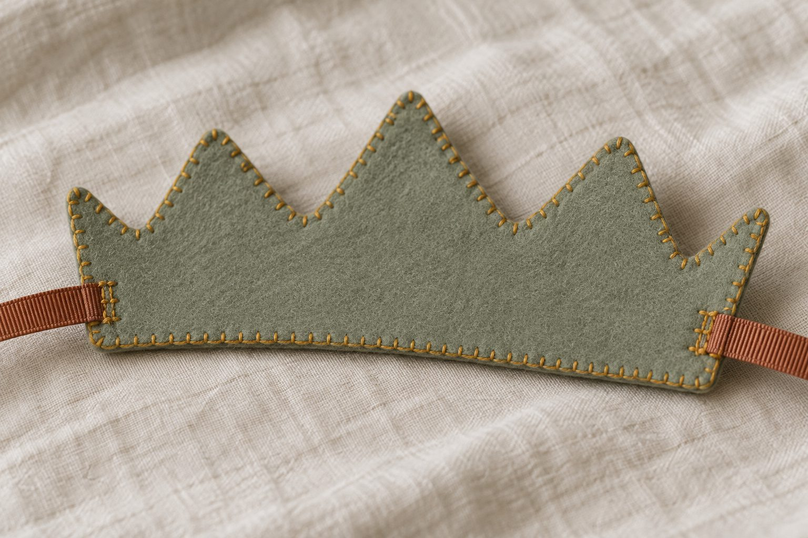

Kde začít
- Vytiskni zkušební tisk a změř ho pravítkem: čtverec musí mít přesně 10 × 10 cm.
- Přečti si obrázkový návod. Deset stran, a pak budeš vědět, co děláš.
- Vyber si tvar korunky a téma a vytiskni jen těch pár listů. Nemusíš tisknout všechno.
- Kup si pomůcky podle seznamu materiálu a pusť se do stříhání.
Tohle vytiskni jako první
Jeden list a na něm čtverec 10 × 10 cm a dvě pravítka. Tím si ověříš, jestli tvoje tiskárna tiskne ve skutečné velikosti. Když tohle sedí, bude v pořádku i všechno ostatní. Zabere to dvě minuty a ušetří jednu zkaženou korunku. V balení jsou všechny listy A4 na stojato, jediná orientace: při tisku 100 %, „Skutečná velikost“, a nezapínej volbu „automaticky otočit a vystředit“.
5 tvarů korunky, v původní velikosti
Všech pět je 45 cm dlouhých a každou nastavíš dvěma stuhami vzadu, od miminka po dospělého. Vyber si jeden. Když šiješ poprvé, nejjednodušší je oblá korunka.
Šablona číslic a písmen
Číslice od 0 do 9, vysoké 7 cm, a celá abeceda velkými písmeny po 3,4 cm. Tím korunku uděláš osobní.
16 šablon témat
Ke každému ze 16 témat patří čtyři strany: barevné šablony, totéž černobíle (na obkreslení), příklad rozvržení a referenční fotka hotové korunky.
- Dinosauři · šablony tématu4 stran · PDF
- Mořské panny · šablony tématu4 stran · PDF
- Mořská zvířátka · šablony tématu4 stran · PDF
- Víly · šablony tématu4 stran · PDF
- Jednorožci · šablony tématu4 stran · PDF
- Piráti · šablony tématu4 stran · PDF
- Vesmír · šablony tématu4 stran · PDF
- Jahody · šablony tématu4 stran · PDF
- Auta a nákladní auta · šablony tématu4 stran · PDF
- Stavební stroje · šablony tématu4 stran · PDF
- Letadla · šablony tématu4 stran · PDF
- Vlaky · šablony tématu4 stran · PDF
- Květiny · šablony tématu4 stran · PDF
- Sluníčko a obláčky · šablony tématu4 stran · PDF
- Lesní zvířátka · šablony tématu4 stran · PDF
- Narozeninový stůl · šablony tématu4 stran · PDF
4 strany motivů podle ročních období
Jaro, léto, podzim a zima – vyber si tu, která se hodí k měsíci narozenin.
Šablony svíček a balónků a nastavitelná šablona číslic
Svíčky a balónky v původní velikosti a tabulka, se kterou vytiskneš číslici v pěti různých velikostech ze stejného listu.
Barevné kombinace a rozvržení
Která barva ke které a kam co na korunce patří: všech 18 barev filcu se vzorkem v původní velikosti, osm hotových kombinací, pět variant rozvržení a návrhový list.
Čisté kraje: dokončovací stehy
Po kraji korunky běží dokola jediná řada stehů, kterou vidí každý. Začátek bez uzlíku, zakončení, hroty a prohlubně, výměna nitě, uchycení stuhy a tři varianty kraje – ze stejných tří základních stehů.
Seznam materiálu i s e-shopy
Co potřebuješ, kolik toho je a ve kterém českém e-shopu to koupíš. Odkazy jsou klikací a kontrolovali jsme je jeden po druhém.
Referenční fotky hotové korunky
Podívej se zblízka, jak hustě jdou stehy, jak na sobě leží dva dílky a jak je stuha zachycená mezi oběma vrstvami. Ke každému ze 16 témat patří i vlastní referenční fotka, na straně 4 šablon tématu.




Další krok
Vytiskni zkušební tisk, změř čtverec a vyber si tvar korunky. Celý první krok je přesně tohle.